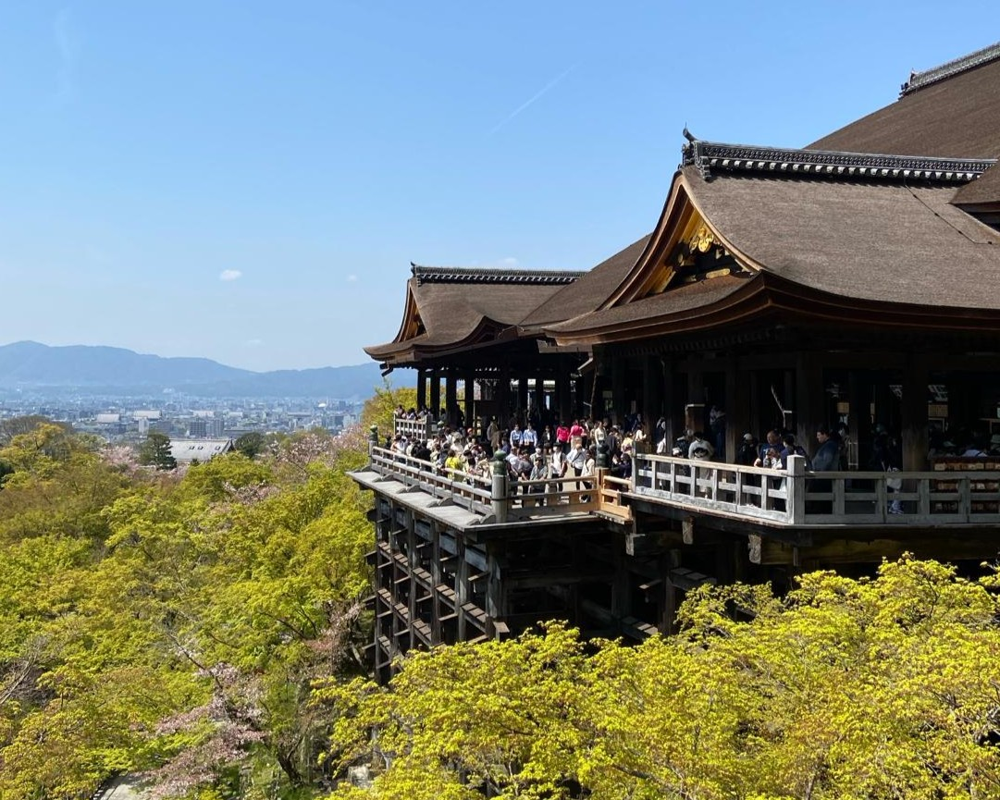
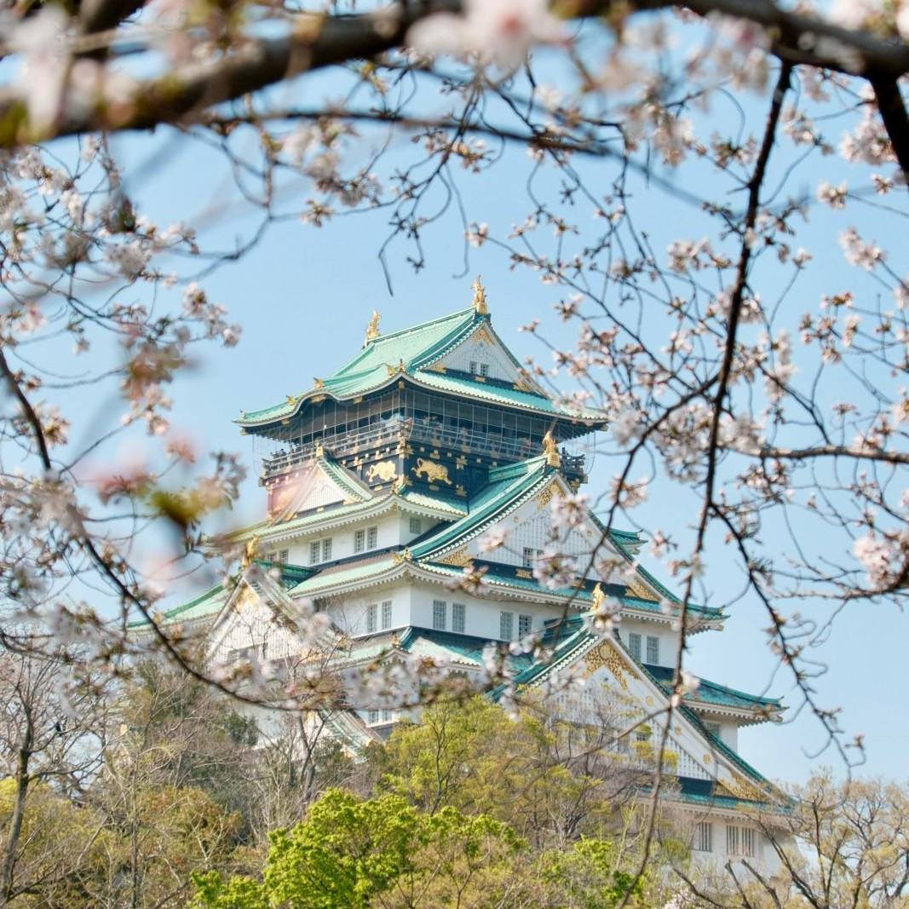
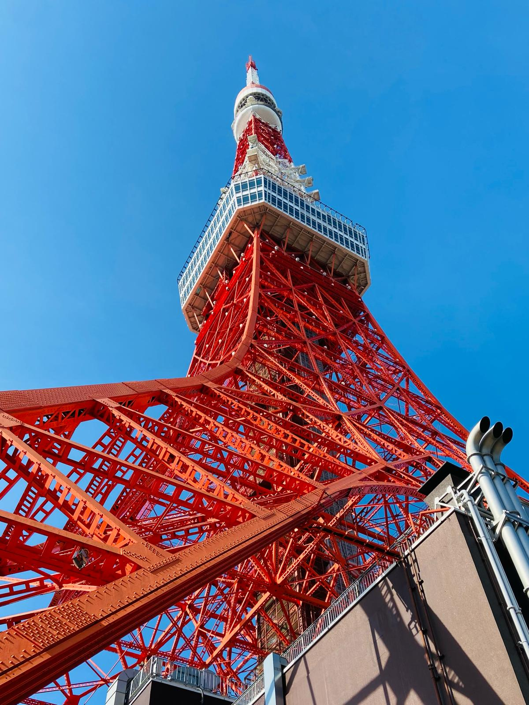

Recommendations
Visiting Japan
Kyoto 京都
Famous for its temples, shrines, and rich history.
- Kinkaku-ji (金閣寺) is the famous golden temple and one of the 17 Historic Monuments of Ancient Kyoto.
- Kiyomizu-dera (清水寺) is a beautiful Buddhist temple and one of the oldest in Kyoto.
- Kiyomizuzaka (清水坂) is the road leading up to the Kiyomizu-dera where there are many shops and great photo opportunities. Often very touristy so I recommend going early in the morning.
- Nijō Castle (二条城) is a 17th-century shogunate castle. Gives a great insight into how the Japanese elite used to live.
- Sagano Romantic Train (嵯峨野トロッコ列車) is an open carriage train best enjoyed in spring or autumn when the foliage is at its prettiest.

Osaka 大阪
Great for shopping, food, and nightlife.

-
Umeda (梅田) is the city centre of Osaka. It features an abundance of shops, restaurants, and skyscrapers.
Although often overlooked by tourists heading to Dotonbori or Osaka Castle, it's one of the city's most convenient areas.
- Dotonbori (道頓堀) Featuring the famous Glico Man, it is one of the most recognizable places of Osaka and its street food is the reason Osaka is called Japan's Kitchen.
-
Namba (難波)/Shinsaibashi (心斎橋) is home to a large variety of shops, bars, restaurants, and nightclubs. It offers fashion from modern luxury to vintage thrifting.
It is the best place for nightlife in Osaka.
-
Osaka Castle (大阪城) Dating back to the 16th century and now refurbished as a history museum, it played a major role in the unification of Japan.
The cherry blossoms in spring make the castle and surrounding parks seem magical.
-
Universal Studios Japan (ユニバーサル・スタジオ・ジャパン) is the first theme park to open outside the US and offers many fun attractions and rides.
Notably, Super Nintendo World.
- Shinsekai (新世界) is a neighbourhood famous for its Kushi-katsu (串カツ) and the Tsutenkaku (通天閣) radio tower.
Tokyo 東京
Has everything you will ever need.
- Meiji Jingu (明治神宮) is a Shinto shrine in the heart of Tokyo but surrounded by forest. Very nice spot to escape the bustling city life.
-
Shibuya (渋谷) is one of the busiest places in the world.
It is known as a hub for youth culture which is reflected in the fashion industry there.
- Shinjuku Gyoen National Garden (新宿御苑) is a large public garden. Especially beautiful in spring during the cherry blossom season.
- Ginza (銀座) is a shopping district with upmarket boutiques, jewelry stores, and high-tech electronics.
- Asakusa (浅草寺) is Tokyo's oldest temple and one of Japan's most widely visited religious sites.
- I have grouped together Tokyo Skytree (東京スカイツリー) and Tokyo Tower (東京タワー) because they are both observation decks. Interesting, but not breathtaking.
-
teamLab is a collection of exhibitions focusing on dissolving the boundary between the physical world and the world of the artwork.
There ae multiple locations in Japan, but the most famous is teamLab Borderless in Azabudai Hills (麻布台ヒルズ).

Other places
Spectacular castle.
Best skiing in the world. Two main ski resorts are Rusutsu (留寿都村) and Niseko (ニセコ). I recommend going in late January or early February.
Often referred to as the Hawaii of Japan. Beautiful beaches and good beer.
Capital city of Japan during the Nara period with stunning temples and shrines. Also has free-roaming deer.
Obviously an incredible sight. Beautiful year-round.